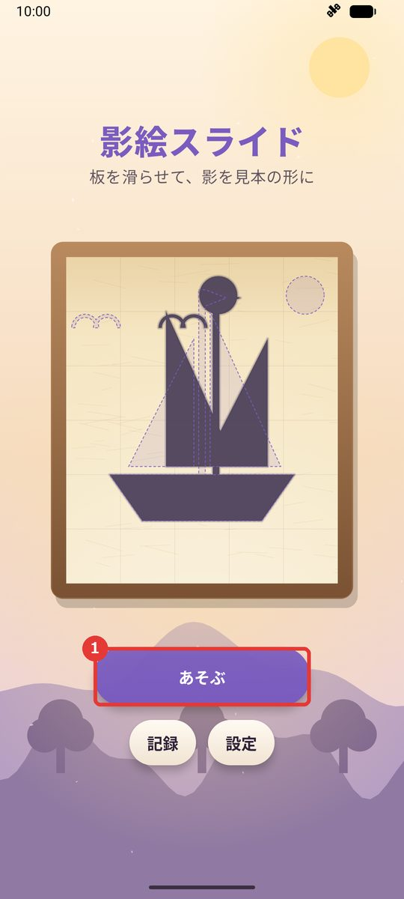
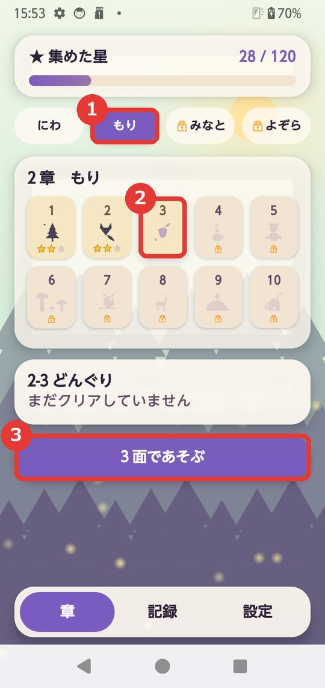
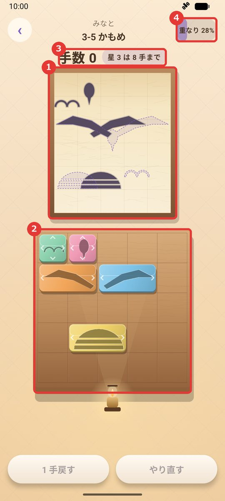
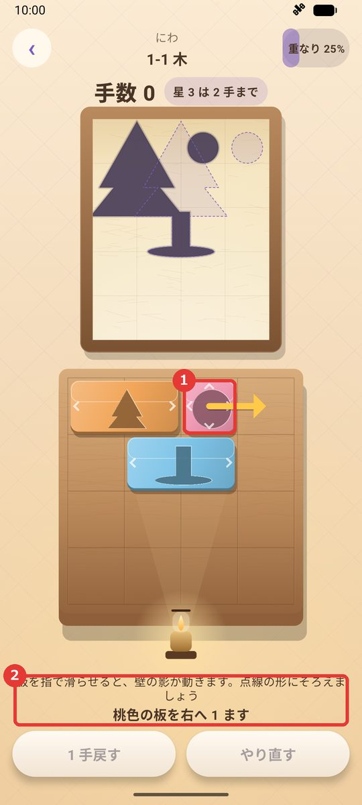
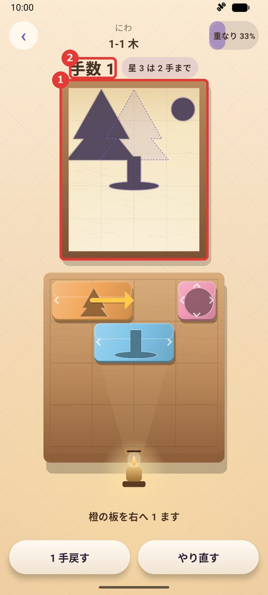
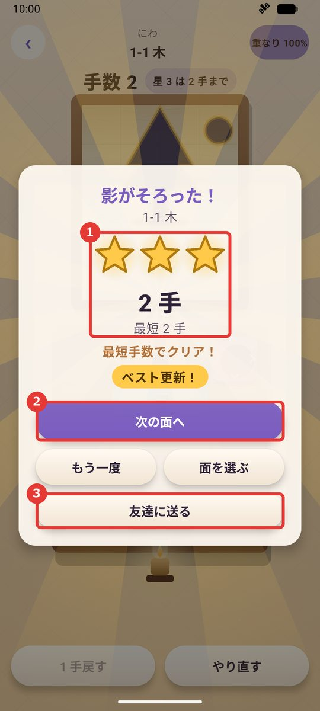
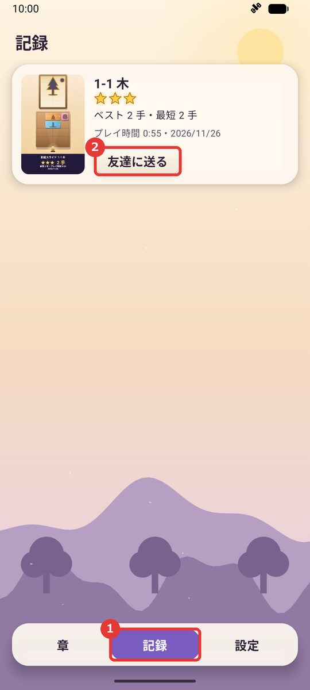
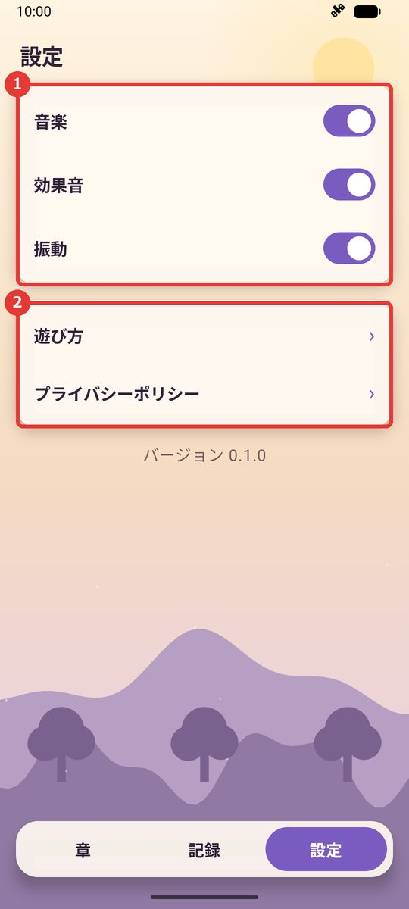

影絵スライド の紹介ページへ戻る ・ DNGG-studio のアプリ一覧
影絵スライド の遊び方
影絵スライドは、机の上の板を滑らせて、灯りに照らされた壁に映る影を、点線の見本とぴったり同じ形にそろえるパズルです。
画像の1のような赤い番号は、見るところ・押すところと、説明の番号です。
この説明は バージョン 0.1.0（お試し版）の画面に合わせています（2026年11月26日）。画面はこれから変わることがあります。
- はじめに：タイトルから面を選ぶ
- 遊ぶ画面の見方
- 板の滑らせ方
- 影がそろったら（星と手数）
- 1 手戻す・やり直す
- 面と章の開き方
- 記録を見る・友達に送る
- 設定
- よくある質問
1. はじめに：タイトルから面を選ぶ

1「あそぶ」を押すと、面を選ぶ画面に進みます

1章を選び、2面のタイルを押して、3「○面であそぶ」を押します
- タイトルの「あそぶ」を押します
- 上の章（にわ・もり・みなと・よぞら）を選びます
- 面のタイルを押すと、下にその面の星と手数が出ます。「○面であそぶ」を押すと始まります
タイルには、その面の見本の影が小さく描いてあります。クリアした面は影が濃くなり、星が付きます。
2. 遊ぶ画面の見方

1壁の影と点線の見本、2机の上の板、3手数と星 3 の目安、4重なり
- 1壁：板の影が映ります。点線が見本の形です。影と点線がぴったり同じになったらクリアです
- 2机と板：板には、その板が映す影の形が彫ってあります。板を滑らせると、壁の影も同じ向きに動きます
- 3手数：滑らせた回数です。横の「星 3 は ○ 手まで」が、いちばん少ない手数（最短手数）です
- 4重なり：影と見本がどれだけ重なっているかの目安です。100% になるとクリアです
影は板の真上（壁の同じ位置）に映ります。板を右に 1 ます動かすと、影も右に 1 ます動きます。机の奥（上）にある板ほど、影も壁の上のほうに映ります。
3. 板の滑らせ方

1板の端の山形の印が、滑らせられる向きです。2最初の面では、金色の矢印と下の文が次の一手を教えてくれます

板を右へ滑らせると、1壁の影も右へ動き、2手数が 1 増えます
- 動かしたい板に指を置き、そのまま滑らせたい向きになぞります
- 指を離すと、近いますにぴたりと止まります。何ます動かしても 1 手です
- 細長い板は長い向きにだけ、四角い板は縦にも横にも滑ります（板の端の山形の印で分かります）
- ほかの板・机の端・金色の釘（4 章）にぶつかると、それ以上は進みません。無理に引っ張ると「コツン」と揺れます
- 途中で指を戻して、元のますで離したときは手数に数えません
4. 影がそろったら（星と手数）

1星と手数、2「次の面へ」、3「友達に送る」
- 最短手数でそろえると星 3、少し多いと星 2、それより多いと星 1 です。あと何手少なければ星 3 かも出ます
- 見本と同じ影になれば、板の並べ方が違ってもクリアです
- ベストを更新すると「ベスト更新！」が出て、記録が保存されます
- 「もう一度」で同じ面をはじめから、「面を選ぶ」で面を選ぶ画面に戻ります
5. 1 手戻す・やり直す
- 「1 手戻す」：最後に滑らせた板を元に戻します。手数も 1 減ります
- 「やり直す」：その面をはじめの並べ方に戻します。手数は 0 になります
6. 面と章の開き方
- 1 つの章に 10 面あります。前の面をクリアすると、次の面が開きます
- 章は、集めた星の数で開きます（もり 12 個、みなと 33 個、よぞら 57 個）。面を選ぶ画面の上のメーターが、集めた星の数です
- よぞらの章には、動かない金色の釘があります
7. 記録を見る・友達に送る

1下の「記録」で開きます。2「友達に送る」で画像と記録の文を送れます
- 面ごとに、いちばん少ない手数の記録（星・手数・プレイ時間・日付）と、そろったときの盤面の画像が残ります
- 「友達に送る」を押すと、端末の共有メニューが出ます。LINE やメールなど、送りたいアプリを選びます
- プレイ時間は、遊ぶ画面を開いていた時間だけを数えます
8. 設定

1音楽・効果音・振動の切り替え、2このページとプライバシーポリシー
- 音楽・効果音・振動を、それぞれ入れたり切ったりできます
- 端末を暗い画面（ダークテーマ）にすると、夜の部屋の絵になります
9. よくある質問
どうしても解けません
見本の点線の中で、どの板の影がどこに入るかを先に考えてみてください。板に彫ってある形が手がかりです。途中で行き詰まったら「やり直す」で、はじめから考え直せます。
記録はどこに保存されますか
端末の中だけに保存します。外へは送りません。アプリを削除すると消えます。詳しくはプライバシーポリシーをご覧ください。
広告やお金はかかりますか
お試し版には広告も課金もありません。インターネットにもつながりません。
お問い合わせ
dngg.studio@gmail.com
絵・音楽・効果音はすべて、このアプリのために作ったものです。